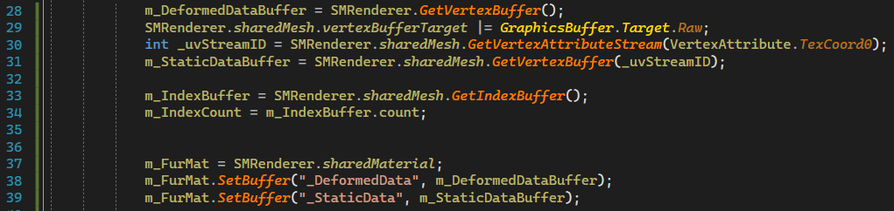

As we all know, the most common method for fur simulation is Shell Based Fur. Simply put, it expands vertices along the normal direction to form stacked shells, and then uses a Noise texture as a fur pattern to create the fur shape through hollowing (Clip or Blend). The basic principles and shading methods have been widely discussed on the internet, so we won't go into detail here. The focus of this article is to introduce a GPU Instance implementation that supports Skinned Mesh in Unity.
The most significant problem with Shell Based fur is the exponential increase in the number of faces. On desktop platforms, a decent animal fur effect usually uses the Alpha Clip method, requiring at least 100 layers to avoid discontinuities. This is completely unrealistic on mobile platforms, where 8-16 layers are more reasonable. However, this leads to discontinuities, so Alpha Blend must be used, which also avoids breaking Early Z optimization.
Another issue is how to draw the Shell. The desktop method is to pre-generate, with controllable thickness and growth direction. This information, along with the number of layers, is written into VertexColor or UV, and drawn in one pass. The mobile approach uses multiple passes. Pre-generation is always an extra step for artists, and even if it can be automated through tools, brushing additional information like growth direction is troublesome. With fewer layers, the actual effect is not very noticeable, and the file size increases exponentially, so it's completely unnecessary. Moreover, URP doesn't support multiple passes by default, so you either need to use multiple material balls to implement multiple passes or extend the pipeline with RenderFeature, both of which are quite cumbersome.
With high face count, multiple passes, and repeated drawing, this is clearly a case where GPU Instance can be used for optimization. Obtain the Mesh of the fur model, write the number of layers into the Material Block, and use DrawMeshInstanced for drawing. However, Unity's skinned mesh renderer doesn't support GPU Instance. Although there are some workarounds, such as BakeMesh or Animation Instancing, they each have their own issues.
Unity added SkinnedMeshRenderer.GetVertexBuffer in 2021.2.0, which perfectly solves the long-standing SkinnedMesh Instance problem. Therefore, the process is to get the VertexBuffer and set it to the Material, draw using DrawProcedual, and SV_InstanceID represents the current layer number.
This solution uses Unity 2021.2.6f1.
First, use GetVertexBuffer() to get the vertex Buffer after skinning. Note that only position, normal, and tangent attributes are obtained here. UV and Index need to be obtained from the mesh.
For a mesh to be compatible with a SkinnedMeshRenderer, it must have multiple vertex streams: one for deformed data (positions, normals, tangents), one for static data (colors and texture coordinates), and one for skinning data (blend weights and blend indices).
Set the Buffer to the material.
Then, perform the drawing. For ease of control, I wrote the number of layers into the Material, which needs to be read out here as the number of Instances.

Finally, for the Shader part, because we're using Procedural drawing, we can only read vertices from the Buffer using SV_VertexID and SV_InstanceID. Note that the Buffer here can only be ByteAddressBuffer, so we need to manually parse it.
DirectX 11 does not allow Index or ::Vertex buffers to also be Structured. For compute shader mesh data access with DirectX 11 compatibility, use Raw.

Note: Because we're using Procedural drawing, we don't need to enable #pragma multi_compile_instancing. Therefore, UNITY_ANY_INSTANCING_ENABLED is undefined, and there's no need to use macros from UnityInstancing.
Finally, Shell Fur Shading with any number of layers can be achieved with a single Pass. There's no need to pre-generate meshes, the number of layers can be adjusted dynamically, and it supports Skinned Mesh GPU Instance. All of this requires only one DrawCall.
Since we're getting the vertex buffer after skinning, in addition to Animation Instance, we can also blend skinned animations.
2021.2.0 not only provides the vertex cache after skinning but also provides the cache from the previous frame.

Based on this, we can simulate the physical effects of fur in CS. Through DrawProceduralIndirect, we can also set the number of layers based on distance, achieving automatic LOD.